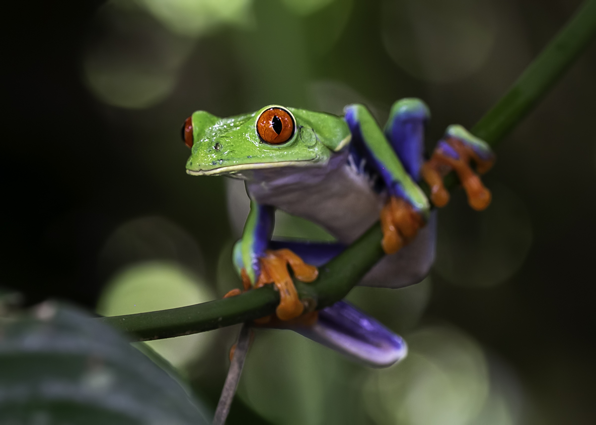
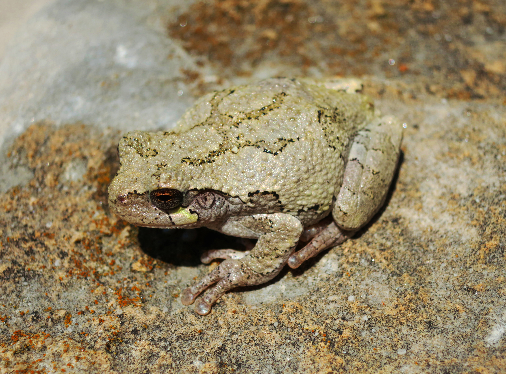
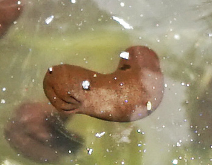
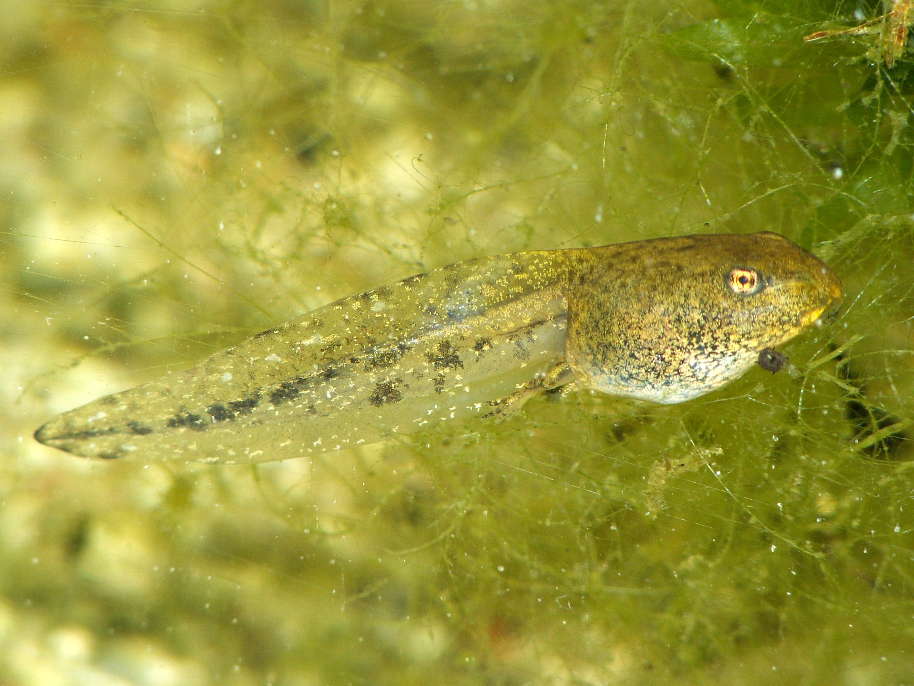

A pond-to-tree look at frog life
Frogs Hop, Swim, and Grow
Meet frogs as they hop, swim, cling, call, and change from tadpoles into adults.

Picture Book
Cover
A pond-to-tree look at frog life
Meet frogs as they hop, swim, cling, call, and change from tadpoles into adults.

Frogs are amphibians. Many have big eyes and strong back legs.
Many frogs jump. Many can swim too. They often stay near fresh water or other damp places.



Some frogs live in trees. Tree frogs often have sticky toe pads that help them hold on.
Frogs make calls. Adult frogs often eat small animals such as insects.
Many frogs lay their eggs in water. Frog eggs are often called frogspawn.


The eggs hatch into tadpoles. Tadpoles live in water and have tails for swimming.
A tadpole changes into a frog in metamorphosis. The tail shrinks, and lungs develop.
There are thousands of frog species. Some are tiny, and some are much bigger.
Frogs are an important part of food webs. Many frog species are in trouble and need safe places to live.
Back Matter
Rounded headings, soft pond colors, reed accents, and ripple paths shape this frog book's springy, calm feel.
.jpg){kind=link}
{kind=link}
{kind=link}
.jpg){kind=link}
{kind=link}
_(8716723960).jpg){kind=link}